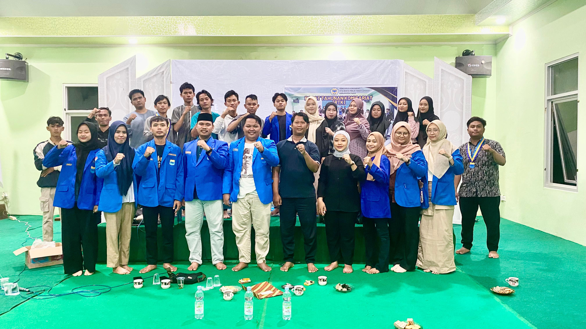
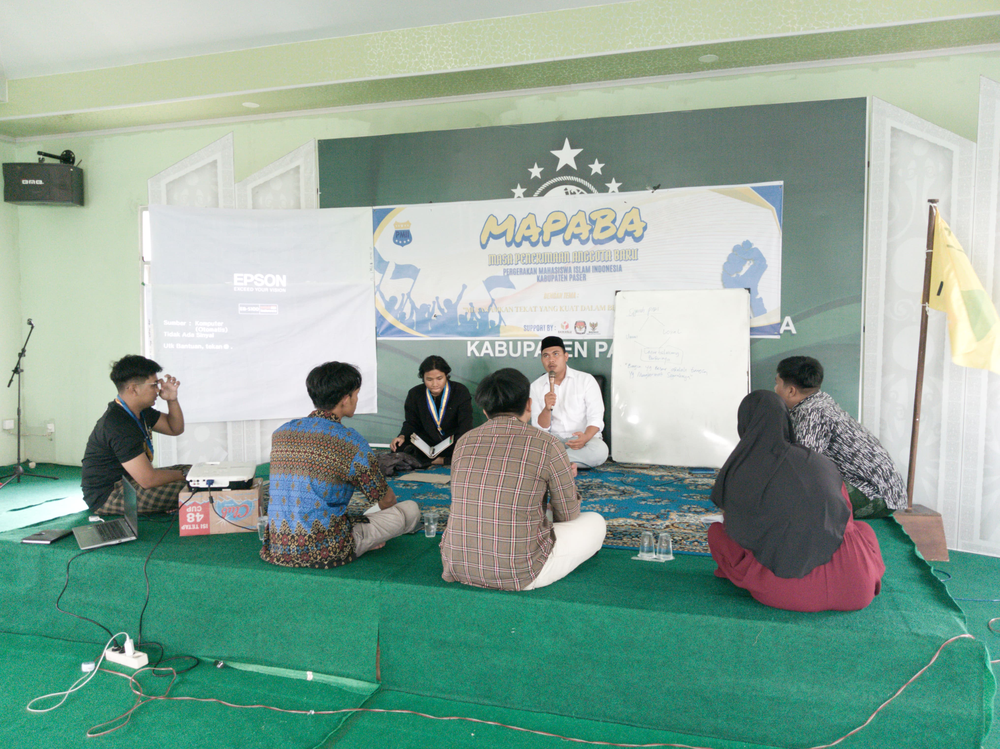
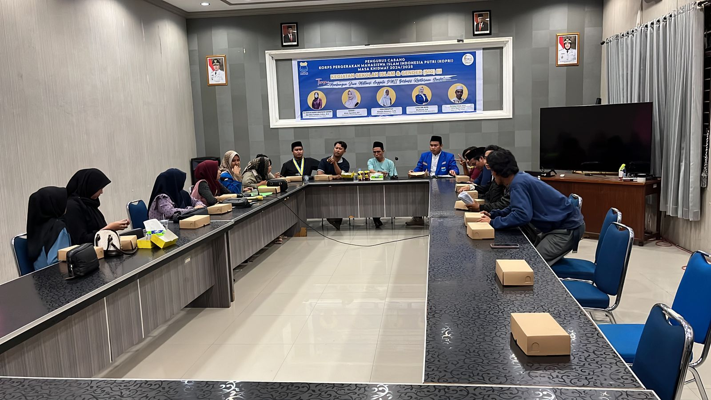

Komisariat PMII Paser
Mengenal lebih dekat komisariat-komisariat di bawah naungan Pengurus Cabang PMII Paser yang tersebar di berbagai perguruan tinggi.

Komisariat Widya Praja
STIE Widya Praja
Fokus pada pengembangan ekonomi, kewirausahaan kreatif, dan kemandirian kader yang berlandaskan Aswaja.

Komisariat STIT Paser
STIT Paser
Merupakan pelopor pergerakan mahasiswa Islam di Paser dengan fokus pendidikan Islam dan kajian tarbiyah.

Komisariat UT Paser
Universitas Terbuka
Mewadahi mahasiswa mandiri dan profesional dengan metode perkuliahan fleksibel melalui kaderisasi hybrid.

Komisariat UMKT Paser
UMKT Paser
Komisariat termuda dan progresif, mengembangkan sains, teknologi, dan moderasi beragama secara ilmiah.
Nama Komisariat
Tahun Berdiri
2020
Kekuatan Kader
300+ Kader
Ketua Komisariat
Nama Ketua
Motto / Tagline
"Tagline"
info Tentang Kami
Deskripsi lengkap mengenai profil dan fokus komisariat.
Sejarah Singkat
Sejarah berdirinya komisariat di kampus yang bersangkutan.
explore Visi & Misi
Visi Komisariat
"Visi"
Misi Komisariat
insights Program Utama / Unggulan
Yuk, Gabung Bersama Kami!
Jadilah bagian dari gerakan perubahan intelektual dan keagamaan di kampus Anda.